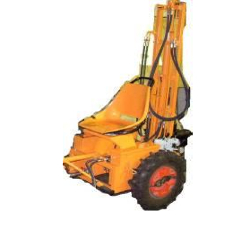

Vrtná souprava pro mělké vrty
LSS - 15
Technologie vrtání
- Jádrově rotační vrtání s TK korunkami na sucho i s vodním výplachem v profilech D 56 - 137 mm.
- Jádrově rotační vrtání s DIA korunkami s vodním výplachem v profilech 59 – 112
technické parametry
- průměr vrtání: 56–137 mm
- max. hl. jádrového vrtu: 15 m
- přepravní rozměry: 3150 x 880 x 1080 mm
- výška věže: 3 m
- pohon: el. agregát 6 - 15 kW
- otáčky vřetene: 80-120-240-400 ot/min
- přítlak vrtný: 900 kp tj. 8,8 kN
- tah na vřetenu: 900 kp tj. 8,8 kN
- kroutící moment: 750Nm